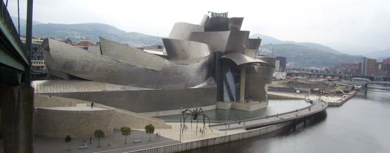

|
Coridele Ibiza Tenerife Madrid Barcelona Bilbao Valencia |
BilbaoBilbao (Bilbo în bască) este un oraș în nordul Spaniei, cel mai mare oraș din Țara Bascilor și din provincia Vizcaya. Orașul este un port principal și centru industrial, situat pe râul Nervión. Populația orașului este de 354.000 de locuitori în 2003, iar zona metropolitană are în jur de 947.000 de locuitori, însemnând că Bilbao este a șasea cea mai mare zonă metropolitană din Spania. În 2004, primarul orașului a fost Iñaki Azkuna. 
În deceniile recente, Bilbao a mers printr-un proces de reînoire urbană bazată în jurul unui sistem de metrou nou și deschiderea Muzeului Guggenheim Bilbao. Un sistem nou de tramvai, EuskoTran, a fost introdus în 2002. Din cauza eforturilor de reînoire și modernizare a orașului, Bilbao este la ora actuala unul dintre cele mai moderne orașe din Europa de Sud. Procesul încă continuă, și în construcție este un turn unic, planificat de Cesar Pelli, care va fi folosit ca sediul pentru guvernul regional basc |